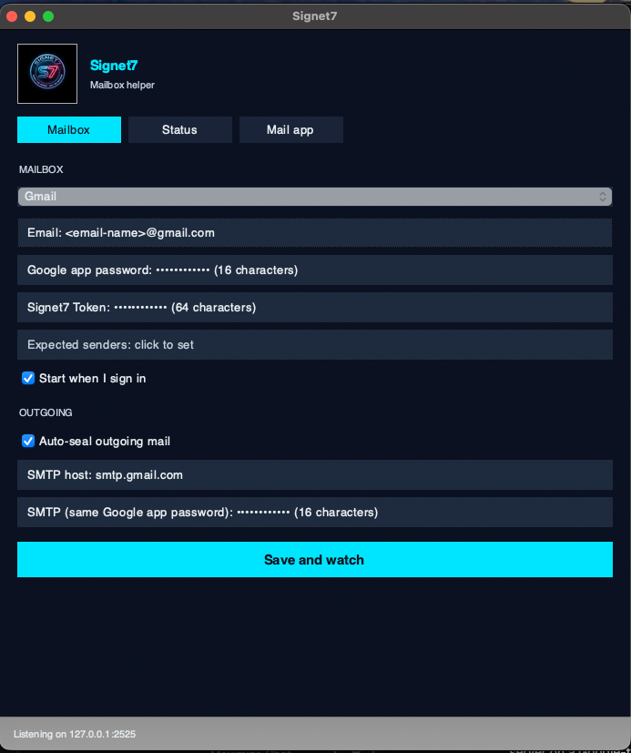
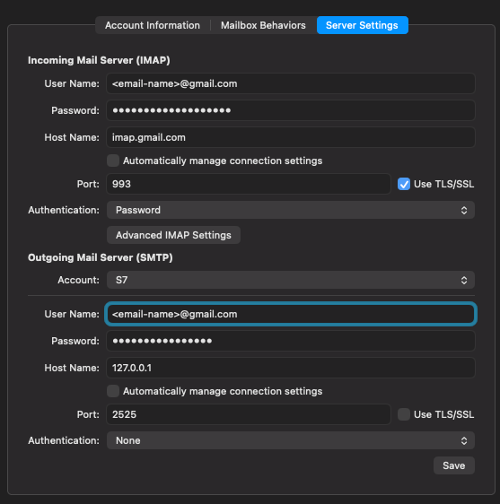

How to use Signet7
Instructions for signing up, checking a message, and using Outlook, Apple Mail, Gmail, or Thunderbird. Recipients do not install anything. Signet7 is not a mail app. You still write and send in the program you already use.
Start here
What gets created: you drop a message on the live check (or Watch checks the named inboxes). Signet7 answers: words match or not, key listed or not, time of the check. You get a signed file. That file is the record. Recipients never install. Companies start at Registration.
Which URL to open
Each job has its own host. This site does not run the check and does not take a Signet7 password.
Check a message
Keep the original. A forward can drop what the check needs. Use a computer if a phone cannot export it. Verified is not safe. Unknown is not fraud. You still decide.
Outlook, after the add-in is installed
- Open the message.
- Home ribbon → Signet7 → Check this message. No file.
- On Outlook on the web: open the Signet7 pane → Check this message.
Gmail, Apple Mail, or a phone
- Open the live check.
- Paste the visible From, To, Subject, and body. File drop is advanced (“saved Outlook message”).
What a result means
The check can tell you
- Whether a seal still matches the protected words.
- Whether a signing key is still bound to a claimed sender.
- Matched, unmatched, or unknown. Then you decide.
The check will not tell you
- That a message is safe, authorized, or fraudulent.
- That unknown or unsealed mail is an attack.
- That you should skip calling a number you already have.
Create or open a company account
- Open account.signet7.io/account.
- Enter your work mailbox.
- Choose Email a sign-in link. If the mail is slow, use the 6-digit code from that same message.
- If you are new, the link creates the company. If you already have one, the link opens it.
There is no Signet7 password. Checkout is not live. Amounts are not set. Recipient checks stay free and do not need this account.
Sideload the Outlook add-in
Sideload the manifest. Not AppSource. Org-wide push is a Microsoft 365 admin task. Not Exchange. Unsigned mail stays quiet.
- Save signet7.io/outlook/manifest.xml to this computer.
- Classic Outlook on Windows: Home → Get Add-ins, or File → Manage Add-ins.
- My add-ins → Custom add-ins → Add from file. Choose the saved
manifest.xml. - Outlook on the web: Settings → Add-ins → My add-ins → Add from file. Same file.
- Open a message. Home ribbon → Signet7 → Check this message. No file.
Hosted panes: taskpane and compose. Write mail in Outlook, not in those panes.
Seal outgoing mail
Optional. Same computer as the mail app. Leave the helper running or port 2525 goes quiet. The helper posts seals to seal.signet7.io. The token still comes from account. Recipients still check at the live check. They do not install.
Not available yet. The signed desktop helper is the install placeholder. Do not point a mail app at 127.0.0.1:2525 until that helper is listening on this computer.
Use each mail app
To check a message, see Check a message. Sealing outgoing mail, when the desktop helper is running, only changes the outgoing SMTP hop on this computer. Host 127.0.0.1, not localhost. Port 2525. TLS/SSL off on that hop. Real TLS is Signet7 to your provider after the seal.
Outlook
- To check: see Check a message after you sideload the add-in.
- To seal later: File → Account Settings → more settings → outgoing server.
- SMTP host 127.0.0.1, port 2525. Keep writing in Outlook.
Gmail in the browser
- To check: see Check a message.
- Browser Gmail cannot point SMTP at 127.0.0.1. Sealing needs a Google Cloud app, the desktop helper, and a desktop mail app on the same computer. Create the Google Cloud app first.
Thunderbird
- To check: see Check a message.
- To seal later: Account Settings → Outgoing Server (SMTP) → Add.
- Host 127.0.0.1, port 2525. Use that server for the company inbox only.
Apple Mail
- To check: see Check a message.
- To seal later: Seal from Apple Mail.
Create a Google Cloud app for Gmail
Gmail sealing needs a Google Cloud project with the Gmail API on, plus an OAuth Desktop client. Do this before you fill the Signet7 helper. Checking a message does not need this. Recipients do not need this.
Do not paste a Google Cloud client ID, client secret, or JSON into Signet7 Token, into Mail user name, or into the Google app password field. The helper still uses a 16-letter Google app password in those password rows. The Cloud app is what Google requires so this mailbox can use Gmail APIs.
- Open console.cloud.google.com with the Google account that owns the company inbox. Accept the Cloud terms if Google asks.
- Create a project. Name it something you will recognize, for example Signet7 Gmail. Select that project in the top bar.
- Enable the Gmail API: APIs & Services → Library → Gmail API → Enable.
- Open APIs & Services → Google Auth platform. If Google asks you to get started, continue.
- Branding: App name Signet7 (or your company name). User support email: this mailbox. Developer contact: this mailbox. You do not need a public logo.
- Audience: Internal if this is a Google Workspace company mailbox. External and Publishing status Testing if this is a personal Gmail. For External/Testing, add this Gmail address as a test user or Google will block the app.
- Clients → Create client. Application type: Desktop app. Name: Signet7 helper. Create. You may download the JSON. Keep it on this computer only. Do not email it. Do not commit it. Do not paste it into Signet7.
- Then create the 16-letter Google app password the helper actually stores: myaccount.google.com/apppasswords (Google Account → Security → 2-Step Verification → App passwords). 2-Step Verification must be on. Google shows four groups of four letters. After Signet7 saves it, that row must read (16 characters).
If App passwords is missing, this Google account or Workspace admin has turned them off. A Workspace admin must allow app passwords, or this mailbox cannot fill the helper yet. Do not substitute the OAuth client ID.
Seal from Apple Mail (when the helper is running)
Sealing needs the Signet7 helper listening on this Mac, plus an Other IMAP account in Mail. Do not set outgoing SMTP to 127.0.0.1 on a Google-type account (Internet Accounts → Google). Mail will list that server as Offline and will not send. To check a message, see Check a message.
The signed helper is not downloadable yet. Use these screens when it is running. The footer must read Listening on 127.0.0.1:2525 before Mail can send.
1. Configure the Signet7 helper
- Open Signet7. Stay on the Mailbox tab.
- Provider: Gmail.
- Email: your full Gmail address.
- Google app password: the 16-letter app password, not your Google login password, not the Google Cloud client ID. Create the Cloud app first (steps), then the app password at myaccount.google.com/apppasswords. After you save, the row must read (16 characters).
- Signet7 Token: the token from account.signet7.io/account. After you save, the row must read (64 characters).
- Start when I sign in: on, if you want the helper after reboot.
- Auto-seal outgoing mail: on.
- SMTP host:
smtp.gmail.com. That is Gmail, not 127.0.0.1. - SMTP password: the same 16-letter Google app password.
- Click Save and watch. Confirm the footer: Listening on 127.0.0.1:2525.

2. Add an Other IMAP account in Mail
- Mail → Settings → Accounts → + → Other Mail Account… (not Google).
- Email: your Gmail address. Password: the same 16-letter Gmail app password.
- Open that account → Server Settings. Uncheck Automatically manage connection settings on both incoming and outgoing.
- Incoming Mail Server (IMAP): Host Name
imap.gmail.com, Port 993, Use TLS/SSL on, Authentication Password. User Name: the full Gmail address. - Outgoing Mail Server (SMTP): Account can be named S7. User Name: the full Gmail address. Host Name
127.0.0.1, Port 2525, Use TLS/SSL off, Authentication None. - Save. Compose with From: this Other account, not the Google-type account. You can keep the Google account for reading.

Mail may show “Unable to verify account name or password” while saving outgoing 127.0.0.1. If incoming IMAP is correct, dismiss it and send a test. Connection Doctor dumps Gmail IMAP first. Search the log for 127.0.0.1 or 2525.
Install the desktop app
The signed app is not open yet. This section is a placeholder. Windows, Mac, and Linux steps will go here when the signed apps are ready.
Recipients never install. They use the live check. When it ships, the app watches one company inbox. It is not a composer. See the download page.
Engineer contract
The public product definition is on Product. Trust language is on Trust. Action-bound signatures. Fail-closed unknown actions. no separate inbound/outbound direction field. HTTP and MCP decision surfaces. The caller refuses or performs. Email candidate s7-email-1 covers text and HTML alternatives plus attachment bytes plus declared metadata.
EXECUTEWIRE, PAY, PURCHASE, REFUND, TRANSFERShort sheets: IT · outbound seal · recipient check.